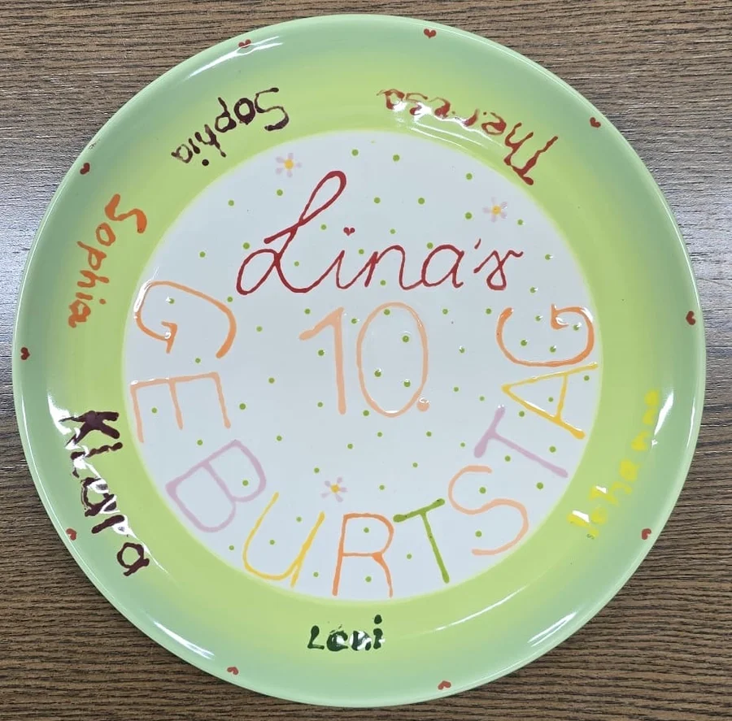

Beliebtester Einstieg
Beliebtester Einstieg
Keramik bemalen
Für Einzelpersonen, Familien & Freunde
ab 15 €
Mindestumsatz pro Person
- Über 200 Rohlinge zur Auswahl (Tassen, Teller, Vasen, Schalen)
- Bis zu 3 Stunden entspannter Malspaß
- Alle Glasurfarben, Pinsel, Schwämme & Techniken inklusive
- Professionelles Glasieren und Brennen durch uns inklusive
- Abholung nach ca. 5–7 Werktagen (spülmaschinenfest)
- Unter der Woche mit Buchung, am Wochenende auch ohne Termin!

Kindergeburtstag · Angebot A
Geburtstag im Malraum für Kinder ab 5 Jahren
20 € pro Kind
Gemeinsam kreativ im regulären Studiobetrieb
- Freie Keramikauswahl bis 20,90 € Warenwert pro Kind
- Ein Kaltgetränk pro Kind und kleine Tischdekoration
- Erinnerungsteller in Rosa oder Türkis zum Unterschreiben
- Farben, Materialien, Malberatung und Brennservice inklusive
- Mindestens ein begleitender Erwachsener ist erforderlich

Kindergeburtstag · Angebot B
Ungestört feiern im exklusiven Eventraum
25 € pro Kind
+ 50 € Grundgebühr für den privaten Eventraum
- Persönliche Betreuung, eigenes Werkzeug und Arbeitsmaterial
- Freie Keramikauswahl bis 25,90 € Warenwert pro Kind
- Ein Kaltgetränk und kleine Süßigkeiten pro Kind
- Individuell gestalteter Erinnerungsteller zum Unterschreiben
- Eigener Kuchen, weitere Snacks und Getränke dürfen mitgebracht werden
- Farben, Materialien, Malberatung und Brennservice inklusive
JGA, Babyshower & Feiern
Kreative Auszeit im exklusiven Eventraum
30 € / Person
+ 50 € Grundgebühr für den privaten Eventraum
- Private Atmosphäre in unserem separaten Eventraum
- Große Auswahl an Keramiken (Guthaben auf Keramik anrechenbar)
- Heiß- und Kaltgetränk pro Person inklusive
- Gemeinsam gestalteter Erinnerungsteller als Andenken
- Eigene Deko, Kuchen und Snacks herzlich willkommen
- Bis zu 3 Stunden ungestörtes Feiern & Malen

Firmen & Teambuilding
Gemeinsam kreativ sein – raus aus dem Büro
Auf Anfrage
Keramik nach individuellem Verbrauch
- Platz für Gruppen bis zu 30–40 Personen
- Exklusive Studionutzung freitags ab 14:00 Uhr buchbar
- Gemeinschaftsprojekte (z. B. Team-Kaffeeservice, Mosaikfliesen)
- Getränke- & Cateringoptionen nach Absprache
- Entspannte Atmosphäre zur Förderung des Teamgeists
- Rechnungsstellung mit ausgewiesener MwSt.

Töpferkurse (Drehscheibe)
2,5 Stunden Intensivkurs mit Profi-Anleitung
75 € / Person
Ton, Glasur & 2 Brände: 16 € / kg
- Eigene professionelle Drehscheibe pro Teilnehmer
- Ton zentrieren, aufbrechen, hochziehen & formen
- Schrühbrand und anschließender Hochbrand inklusive Glasur
- Kleine Gruppen für maximale individuelle Unterstützung
- Auf Deutsch oder Englisch möglich

Freies Töpfern
Für alle mit Vorkenntnissen – 24/7 flexibel
10 € / Stunde
Glasieren: 6 €/Std. | Brennservice separat
- Smartlock Nuki-Zugangscodes für maximale Zeitfreiheit
- Vollausgestattete Werkstatt mit Drehscheiben und Werkzeug
- Professionelle Rohstoffe & Tonsorten vor Ort
- Schrühbrand (6 €/kg) & Hochbrand (8 €/kg) buchbar
- Ofenmiete (130L Ofen) komplett für 70–80 € möglich
💡 Gut zu wissen
Alle gebrannten Keramiken sind lebensmittelecht und spülmaschinenfest! Deine Kunstwerke können nach ca. 5 bis 7 Werktagen im Studio abgeholt werden. Wir freuen uns auf dich!